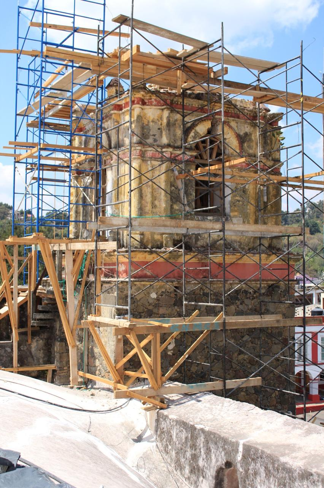

El campanario
La voz del convento y de la comunidad

El campanario era mucho más que el lugar donde se encontraban las campanas. Desde lo alto del conjunto conventual, su sonido podía extenderse a gran distancia y convertirse en una verdadera voz que comunicaba al convento con la población.
Para los frailes, las campanas tenían una función fundamental dentro de la vida cotidiana del convento. La jornada religiosa estaba organizada en diferentes momentos dedicados a la oración, al estudio, al trabajo, a los alimentos y al descanso.
El sonido de la campana ayudaba a señalar esos momentos y, especialmente, convocaba a los religiosos para reunirse como comunidad. Cuando la campana sonaba, el fraile sabía que había llegado el momento de dejar su ocupación particular y responder a una llamada común.
De esta manera, la campana no solamente organizaba el tiempo. Su sonido podía adquirir también un significado espiritual: recordaba al religioso que su vida no estaba organizada únicamente alrededor de sus propias actividades, sino en torno a Dios y a la comunidad de hermanos con quienes compartía la vida conventual.
Pero la voz de las campanas no permanecía encerrada dentro de los muros del convento. Su sonido se extendía hacia las casas, los caminos y los campos de Tetela del Volcán.
En una época en la que no existían los medios de comunicación actuales, las campanas cumplían también una importante función comunitaria. Sus distintos toques podían convocar a las celebraciones religiosas, acompañar las fiestas y solemnidades, anunciar acontecimientos importantes y hacerse presentes también en los momentos de duelo.
Así, el campanario establecía un vínculo entre la vida que transcurría dentro del convento y la vida cotidiana del pueblo. Frailes y habitantes escuchaban una misma voz que marcaba determinados momentos del día y acompañaba los acontecimientos de la comunidad.
Para contemplar
Durante siglos, generaciones de frailes y habitantes de Tetela del Volcán escucharon el sonido de estas campanas. Cambiaron las personas, las costumbres y las épocas, pero desde lo alto del convento continuó escuchándose su llamada.El campanario nos recuerda que el convento no era una realidad completamente aislada detrás de sus muros. Su vida se encontraba profundamente relacionada con la comunidad que había crecido a su alrededor.
A través de sus campanas, el convento hablaba al pueblo, mientras el ritmo de la vida religiosa se hacía también parte de la vida de la comunidad.
El campanario después del sismo

El campanario durante los trabajos de restauración posteriores al sismo de 2017.